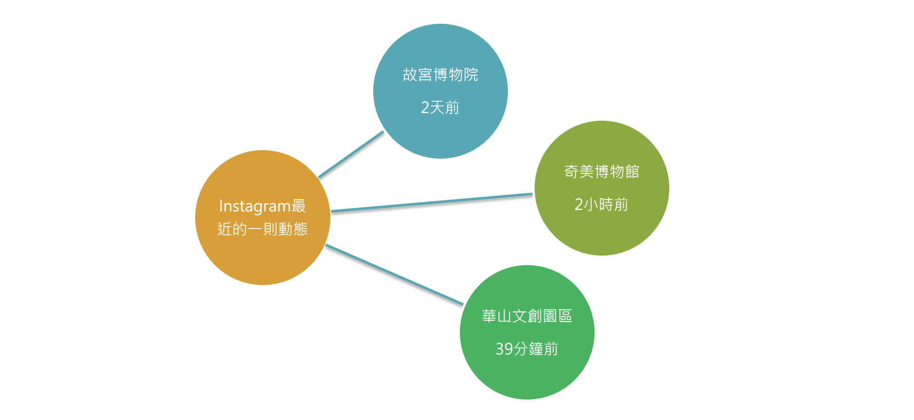
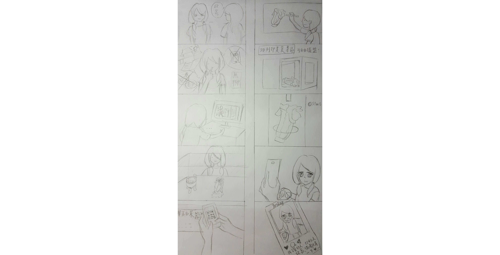
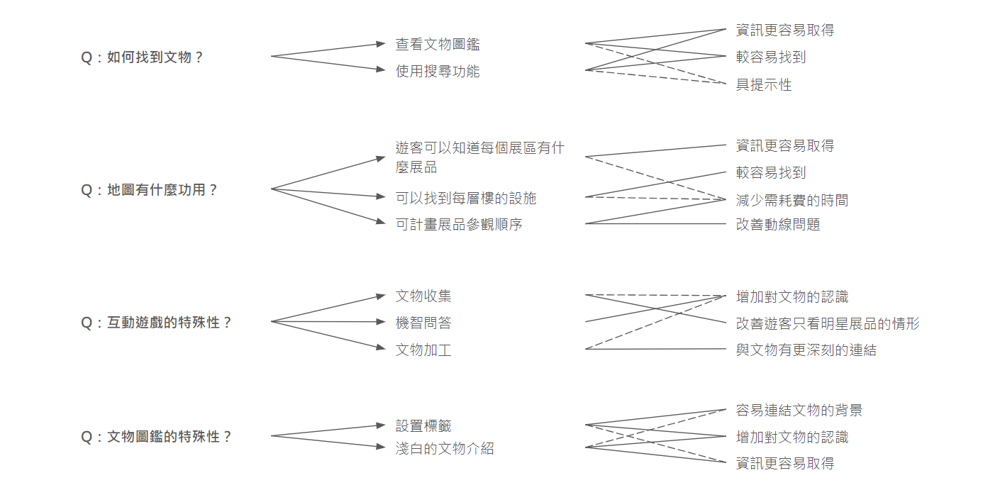
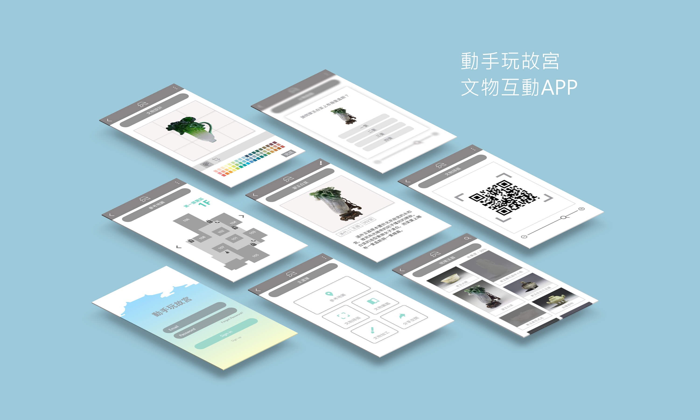

動手玩故宮APP
UI / UX Design｜Feb. - June 2017
這個項目的核心目標是透過發想一款APP，為大學生創造一個難忘的觀展體驗。旨在讓國立故宮博物院的資訊更加淺顯易懂，改善大學生對故宮的既定印象，並賦予故宮文物一些遊戲化元素，豐富觀展過程。這個項目目前仍為原型狀態，但渴望在國立故宮博物院實現。
角色 UI/UX 設計師
能力 互動設計、用戶研究、訪談、原型製作、Illustrator、Adobe XD
背景
首先，我們針對國立故宮博物院進行數據收集，包含官方網站、FB瀏覽量以及大學生較常使用的Instagram動態更新的時間，並與相似產業做比較。在完成國立故宮博物院資訊提供及行銷模式的背景研究後，我們通過訪問3位一年內去過故宮的大學生，深入到主要研究中，並實地走訪國立故宮博物院，親自體驗觀展流程，加以驗證訪談所得的資訊。

解決問題
透過訪談與實際觀展，我們歸納出一些痛點，包含：「語音導覽無趣且太學術」、「動線差，一直轉頭很暈」以及「文物標示晦澀難懂」。問題陳述：是不是可以設計一些互動遊戲增加觀展的趣味性，使大學生產生興趣了解故宮中的文物？故宮太過學術性的資訊是否可以更簡單明瞭，讓觀展者能夠接受？

觀展流程的情境發想圖


APP介面設計圖（註：文物圖片與故宮剪影為故宮資源）